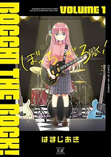

El manga de Bocchi the Rock! lo está petando en Japón después del exitazo del anime
"Bocchi the Rock!" fue tranquilamente la mayor sorpresa de todo 2022, porque ya,
dudo que nadie se esperara que cosas como "Cyberpunk: Edgerunners" o "Sono Bisque Doll wa koi wo Suru"
lo petaran como lo hicieron, pero si hablamos de nombres desconocidos seguramente este era el mayor de
todos. Ahora, a consecuencia de lo que fue un anime absolutamente maravilloso de la mano
de CloverWorks, resulta que el manga se ha puesto a vender como churros en Japón.

Bocchi the Rock! llega incluso a los noticieros japoneses
En un popular foro de comentarios en Japón se reportó que la franquicia de Bocchi the Rock!
apareció en un reportaje para el programa de televisión japonés News Every de la Nippon Television,
informando sobre el hecho de que la serie se ha convertido en un fenómeno social.
También se hicieron referencias a los palmareses de la franquicia, como el éxito de sus álbumes
musicales y sus
paquetes Blu-ray/DVD, así como el hecho que ha provocado un aumento en las ventas
de guitarras de una forma sin precedentes.
😀 😄 😍 💗